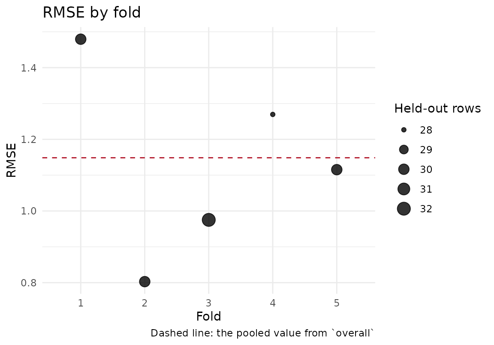

A pooled RMSE of 3.2 can come from 3.2 in every fold or from 1.1 in eight
folds and 14 in one (a model that works, and a model that fails in one
region), and the pooled number cannot tell the two apart. This draws the
metric of each fold as a point, sized by the number of held-out
predictions the fold contributed, with the pooled value from
overall as a horizontal line, so the spread behind the number is
visible. A compare_models_cv() result draws one panel per
model on a shared scale, folds aligned, which is the comparison the shared
fold set was built for.
Arguments
- cv
The list returned by
cv_spatial(),cv_gwr(),cv_bayes(),cv_rf()orcompare_models_cv().- metric
Character(1) naming a column of
fold_metrics(or ofby_fold). Default"RMSE".- ...
Ignored.
Details
Any column of fold_metrics can be drawn, including a backend's
extras (bandwidth, CRPS, coverage_95) and columns a
metrics function added. A column that is NA in every fold is
refused with a message saying why rather than drawn as an empty panel:
Adj_R2 is NA for every backend unless p was passed to
cv_spatial(), by design. The pooled line is drawn from
overall when it carries the metric, from
predictive_coverage for cv_bayes()'s coverage and CRPS
columns, and not at all for a per-fold extra that has no pooled
counterpart (a bandwidth), in which case the caption says so.
Examples
if (requireNamespace("ranger", quietly = TRUE) &&
requireNamespace("ggplot2", quietly = TRUE)) {
library(sf)
set.seed(1)
n <- 150
dat <- st_as_sf(
data.frame(x = runif(n, 0, 1000), y = runif(n, 0, 1000), a = rnorm(n)),
coords = c("x", "y"), crs = 32632
)
dat$z <- 2 * dat$a + 0.003 * st_coordinates(dat)[, 1] + rnorm(n, 0, 0.5)
cv <- cv_rf(dat, "z", "a", k = 5, num_trees = 100)
plot_cv_metrics(cv, "RMSE")
}
#> cv_rf(): no folds supplied -- using spatial block k-fold CV (k=5).
#> Warning: make_folds(): block dimension (238.4) < autocorrelation range (494.0). Spatial CV may leak correlated information across folds. Pass block_size = 494 or auto_range = TRUE.
